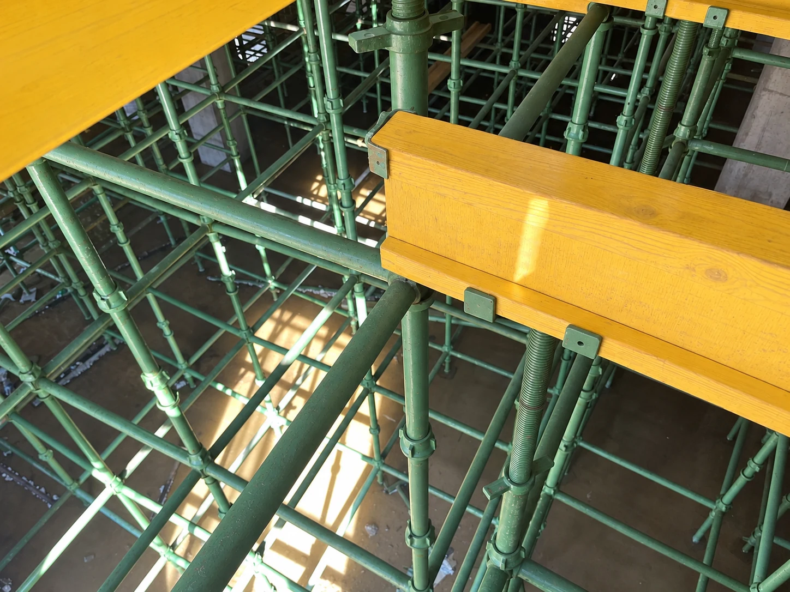

Учтем элементы системы
Фиксируем состав в спецификации, чтобы заранее спланировать комплектацию и поставки.
Бесплатный расчет под ваш объект: схема расстановки,
состав комплекта, стоимость аренды и план поставки.
Москва и МО · Краснодарский край и Адыгея · Ставрополье и КМВ · Крым · Ростовская область
В течение 15 минут после получения проекта свяжемся
и сообщим срок подготовки расчета.
На большой стройке важны не только стойки и ригели. Нужны расчет под нагрузки, понятная схема, состав оборудования и согласованный график поставки.
Фиксируем состав в спецификации, чтобы заранее спланировать комплектацию и поставки.
Учитываем очередность бетонирования и срок аренды при подборе оборудования.
Высокие перекрытия, балки, перепады отметок и наклонные конструкции — по расчетной схеме.
Помогаем разобраться в схеме и комплектации на этапах подготовки и работы на объекте.
Комплектуем по спецификации из собственного запаса. Нужный объем и даты отгрузки согласуем под ваш объект.
Обслуживаем и ремонтируем оборудование в своем цехе, подготавливаем его к следующей аренде.
Условия возврата согласуем до отгрузки — вы заранее понимаете порядок завершения аренды.
Шесть примеров подбора CUP-LOCK для разных задач: от локальных балок до объемных систем со сложной конфигурацией.
Подбор опорной системы под перекрытие и монолитные балки.
Подбор системы под наклонное перекрытие с переменной высотой опор.
Подбор опорной системы под перекрытие и ригели на участках с разной высотой.
Подбор CUP-LOCK для отдельного участка плиты перекрытия с раскладкой балок и фанеры.
Подбор конфигурации CUP-LOCK по высотным зонам сооружения.
Подбор опор CUP-LOCK под отдельную монолитную балку.
Примеры инженерных решений обезличены: названия заказчиков и расположение объектов не публикуются. Количество элементов приведено по спецификациям, а не по отгрузкам. Отметка перекрытия не равна высоте опорной системы.

Стойки соединяются ригелями через чашечные узлы и образуют пространственную опору для опалубки перекрытия.
Выберите элемент, чтобы узнать его назначение.
Вертикальные стойки и горизонтальные ригели формируют пространственную опорную систему. Их количество и расстановка определяются расчетной схемой.
Соединяет ригели со стойкой. Нижняя чаша служит опорой для концов ригелей, верхняя подвижная чаша фиксирует соединение.
Верхние опоры поддерживают балки опалубки. Домкраты позволяют выставить систему по проектным отметкам. На фото отмечена верхняя опора; нижние домкраты здесь не показаны.
На опоры устанавливаются балки, выше располагается настил опалубки перекрытия. Состав и раскладку подбираем под проект. На фото отмечена балка.
Расчет и схема расстановки — бесплатно. После получения проекта свяжемся в течение 15 минут и сориентируем по точному сроку подготовки расчета.
Изучим проект, высоты, нагрузки и этапность. При необходимости бесплатно выедем на объект.
Подберем конфигурацию CUP-LOCK и состав оборудования под ваш объект.
Укажем стоимость аренды, условия и логистику. Подготовим ППР за 2–4 дня.
Согласуем объемы, очередность отгрузок, даты доставки и обратный вывоз.
Фиксируем условия в КП до поставки.
Стоимость зависит от состава оборудования по спецификации, периода использования и очередности работ. Минимальный срок, залог и порядок оплаты согласуем в предложении.
Логистику укажем отдельными позициями. Согласуем даты, объемы и очередность поставок, а также вывоз после аренды.
До отгрузки согласуем порядок приемки и условия возврата. По вопросам комплектации и завершения аренды вас сопровождает менеджер.
Фотографии системы на строительных объектах — от общего вида до устройства опорной конструкции.
Стоимость, сроки и очередность поставок согласуем с учетом объема комплекта и расположения площадки.
Бесплатно рассчитать комплект и логистику ↗Отзывы об аренде CUP-LOCK, комплектации крупных объектов и работе команды DAYA Group.
В «Дайя Групп», оказалось, что в наличии есть все, что нужно, и уже на следующий день нам привезли заказ.
Благодарим за предоставление в аренду качественной конструкции «Cup Lock». Очень выручили! Срочно заливали чашу бассейна, компания, с которой была договоренность вовремя не смогла предоставить оборудование. Новую покупать не хотелось, бюджет не был на это рассчитан. В «Дайя Групп», оказалось, что в наличии есть все, что нужно, и уже на следующий день нам привезли заказ. По стоимости вышло все недорого, если сравнивать с другими компаниями, сдающими такое же оборудование. Следующие 2 объекта будем закрывать с вами. Спасибо!
7000м2 перекрытия укомплектовали за неделю! Будьте уверены, если есть задача «ДАЙЯ групп» ее реализует в кратчайшие сроки.
Долго искали компанию, которая может оперативно решать вопрос комплектации опалубкой объектов любой сложности.
Так сказать, найти «единого» поставщика, который может предоставить конструктивное решение сложных узлов, а главное оперативно укомплектовать объект, ведь время, очень важный фактор в нашем нелёгком строительном деле. Компания «ДАЙЯ групп», оказалась именно таким, надёжным партнёром, дающим уверенность в вопросах связанных с поиском оборудования, доставкой и сопровождением объекта строительства.
Сотрудничаем уже более 3-х лет, использовали оборудование данной компании на ряде объектов в Краснодарском крае, Ростовской области. Особенно запомнилось с какой быстротой и эффективностью «ДАЙЯ групп» комплектует большие, масштабные проекты. 7000м2 перекрытия укомплектовали за неделю! Будьте уверены, если есть задача «ДАЙЯ групп» ее реализует в кратчайшие сроки.
Все было поставлено в срок, по адекватным ценам. Строительство закончилось успешно. Будем обращаться ещё по мере необходимости.
Строили бассейн в оздоровительном комплексе в Краснодаре. В конце года нужна была опалубка в большом объёме, менеджер помог укомплектовать для дальнейшего строительства. Все было поставлено в срок, по адекватным ценам. Строительство закончилось успешно. Будем обращаться ещё по мере необходимости.
Пришлите проект или оставьте контакт — начнем с вашей задачи.
Отзывы клиентов, опубликованные на сайте DAYA Group. Описанные сроки относятся к опыту конкретных клиентов; условия нового заказа согласуются отдельно.
Есть проект? Прикрепите его для бесплатного расчета. Нет чертежей? Расскажите о параметрах стройки — поможем определить следующий шаг.
В течение 15 минут после получения проекта мы свяжемся с вами и сориентируем, когда точно сможем подготовить расчет. Срок зависит от объема и сложности задачи.
Выезд на объект бесплатный. Удобное время и необходимые исходные данные согласуем с вами.
Подготовим ППР за 2–4 дня. Состав документации и исходные данные обсудим при обращении.
Да. Для первого обсуждения опишите расположение объекта, ориентировочную площадь, высоту и сроки. Менеджер уточнит данные, необходимые для расчета.
От конфигурации и объема оборудования, срока аренды, условий поставки и логистики. Итоговое предложение готовится под конкретный объект.
Укажите очередность работ при обращении. Возможность поставок партиями и наличие нужного объема согласуются с менеджером.
Допустимые параметры определяются паспортом оборудования и расчетной схемой. Для подбора конфигурации нужны исходные данные вашего объекта.
Да, логистику на объект и обратный вывоз можно включить в предложение. Стоимость и сроки согласуются отдельно.
Отправьте проект на почту, напишите в MAX или позвоните. Если чертежей пока нет, начнем с параметров стройки.